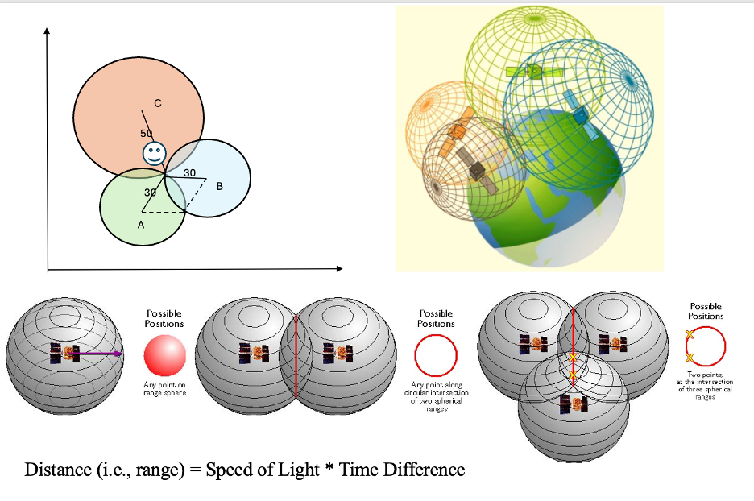
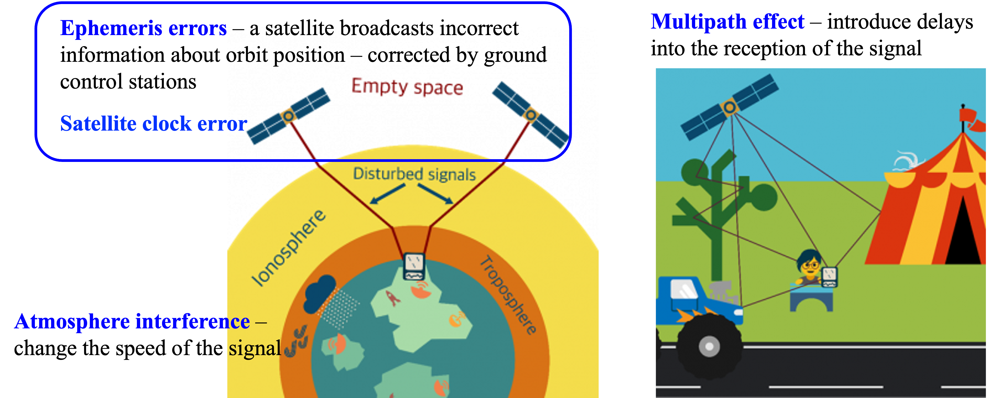
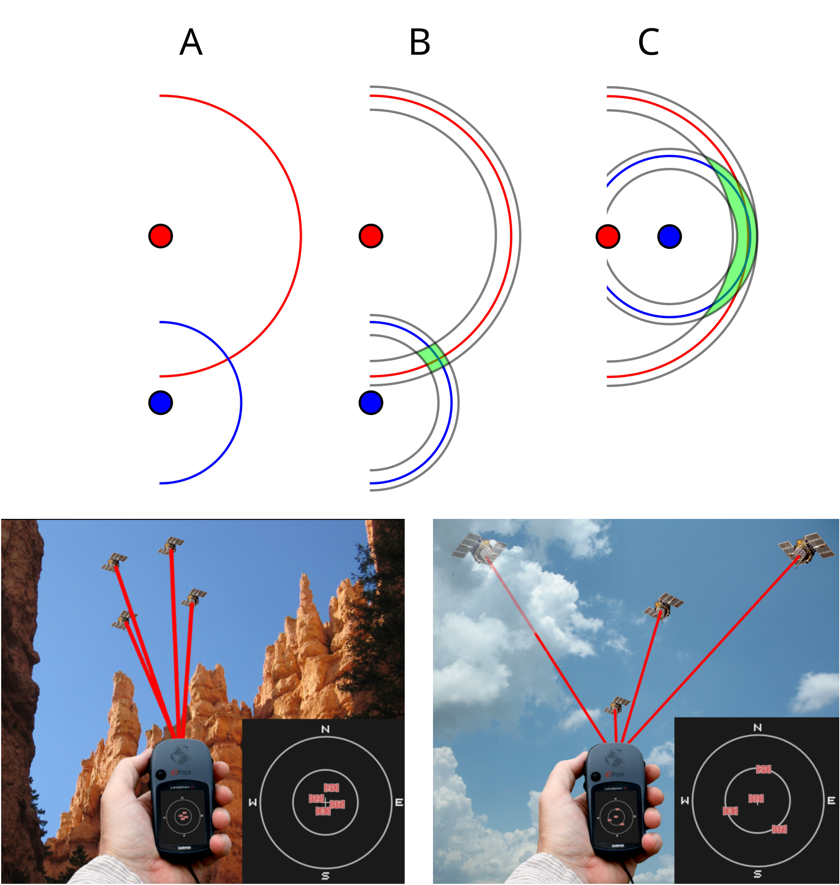
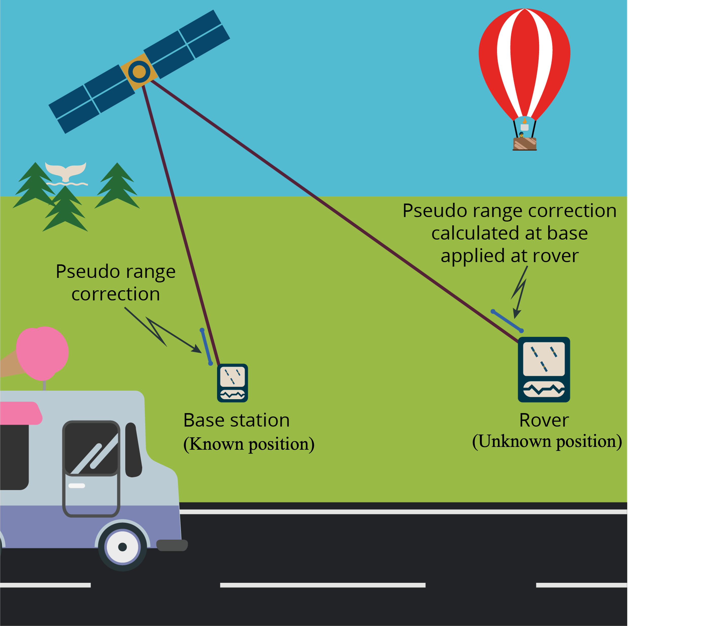

6 Global Navigation Satellite Systems
GPS is not just a system of satellites and signals. It’s a new form of timekeeping, a new kind of map, and a new kind of power. - Anonymous
Understand the concepts and principles of GNSS
Identify sources of uncertainties in GNSS measurements and mitigation techniques
6.2 Components of GNSS
A GNSS consists of three components: the space segment, the control segment, and the user segment.
6.2.1 Space segment
The space segment of a GNSS includes the satellites that broadcast signals across multiple frequencies (e.g., L1, L2, L5 for GPS) to the Earth’s surface, which are used for positioning, navigation and timing services. Each satellite in the constellation is equipped with highly accurate atomic clocks that synchronize with the timing system on the ground. The most critical information contained in the GNSS signals include the satellite position and the exact time the signal was transmitted.
In the case of GPS, the satellite constellation is arranged into six equally spaced orbital planes surrounding the Earth. Each plane originally contained four satellite slots, resulting in a constellation of 24 baseline satellites (three additional slots were added, expanding to 27 baseline satellites). With the inclusion of additional spare satellites, the current constellation has a total of 31 operational satellites as of 2025.
GPS satellites orbit at an altitude of about 20,200 km (12,600 mile) with an orbital period of approximately 12 hours, allowing the satellites to complete two orbits each day. At this altitude, each satellite can observe approximately 33.9% of the Earth’s surface. The GPS constellation design ensures that, at any given time and location on Earth, a user can observe at least four satellites —the minimum required for positioning and clock bias correction. The system also incorporates redundancy to ensure that even if one or more satellites become unavailable, others in the constellation can take their place, maintaining continuous and accurate positioning services. Newer generations of GPS satellites, such as the GPS III/IIIF series, offer improved signal quality, greater resistance to jamming, and enhanced positioning accuracy. Note that other GNSS systems use different constellation configurations.
6.2.2 Control segment
The control segment of a GNSS system consists of a network of ground-based antennas, control stations and globally distributed monitor facilities. It is responsible for overseeing the health and status of the satellites, including routine monitoring of satellite bus and payload performance. The control segment also manages satellite operations, such as commissioning new satellites, performing maintenance, decommissioning old satellites, and ensuring proper disposal. Additionally, it continuously monitors satellite signal-in-space performance to ensure compliance with accuracy and reliability standards, making necessary adjustments to maintain the system’s overall effectiveness.
6.2.3 User segment
The user segment of a GNSS system consists of all GNSS receivers on the Earth’s surface that receive and use satellite signals for positioning, navigation and timing services. GNSS receivers are designed to receive signals from satellites only but cannot send signals to satellites. In GPS, civilian and military users utilize different signals, although they both rely on the same constellation of satellites. Civilian users primarily access the L1, L2, and L5 frequencies for standard navigation and positioning, with L5 offering higher accuracy for aviation. Military users, however, also use the L1, L2, and L5 frequencies, but with encrypted signals such as the P(Y)-code and M-code for enhanced security and precision. The military’s encrypted signals offer greater accuracy, security, and resistance to jamming compared to civilian signals.
6.3 How GNSS works
GNSS utilizes the trilateration method to determine the location on the Earth’s surface. This method works by measuring the distance from a receiver to multiple satellites whose positions in space are precisely known. The locations of satellites are embedded in the signals broadcasted by each satellite. The distance between the receiver and a satellite, which is called the range, is calculated by multiplying the time that signal travels from the satellite to the receiver by the speed of light (approximately 3 ×108 m/s).
On a two-dimensional plane, if the distances of an unknown point from three known points are determined, three circles can be drawn. The unique location where all three circles intersect is where the unknown point is Figure 6.2 a. GNSS applies this same principle but in 3D with spheres. Each distance measurement defines a sphere with the satellite at its center and the measured distance as its radius. The receiver must be located somewhere on the surface of this sphere. With signals from at least four satellites, the intersection of these spheres reveals the receiver’s exact 3D coordinates on earth surface and also synchronizes its clock for precise timing Figure 6.2 .

6.4 GNSS error sources
Multiple factors can affect the performance of GNSS when determining the position of the receiver on Earth’s surface. Accurate satellite position and precise timing are essential for the measurement of the range (distance) between satellite and receiver – calculated using the time that signals travel and speed of light – to pinpoint the receiver’s exact location. Errors in range measurements and satellite location introduce uncertainties in determining the location on the Earth’s surface. Thus, GNSS often creates a range of uncertainty around the receiver position rather than a fixed point.
Errors can occur in the satellite’s broadcast signals, such as ephemeris errors (inaccurate satellite position data) and satellite clock error (timing discrepancies). Additionally, signal travel through the Earth’s atmosphere can introduce atmospheric interference, particularly from the ionosphere and troposphere. Once the signal reaches the ground, the multipath effect can occur, where the signal reflects off surfaces like buildings or the ground before reaching the receiver, leading to inaccurate range measurements Figure 6.3. We will discuss each type of error in more details.

First, errors can happen to the space segment. Ephemeris errors refer to inaccurate information about satellite positions in space in the GNSS broadcast signals. Each GNSS satellite broadcast its own location and orbits, known as ephemeris information, which is used by user segment to determine its own location on Earth’s surface by calculating range distance. However, satellite’s orbit is constantly influenced by gravitational forces so that slight discrepancies can occur in the satellite’s position over time. While control segment keeps monitoring and updating the location of each satellite, it is possible that small inaccuracies still affect the receiver’s ability to determine an accurate position. Satellites are equipped with high accuracy atomic clocks that are used for precise timing and positioning (calculating the time that signals travel through space). However, atomic clocks can drift (on the order of nanoseconds) causing errors in calculating the range distance (it is too far away!).
Second, the Earth’s atmosphere, specifically the ionosphere and troposphere, can cause signal delays and distortions as GNSS signals travel from the satellites to the ground. These delays vary depending on factors like solar activity and atmospheric conditions, leading to temporary inaccuracies in positioning. While some systems attempt to model and compensate for these delays, they remain a significant source of error, especially in regions with extreme atmospheric conditions.
Third, the multipath effect occurs when GNSS signals reflect off surfaces such as buildings, trees, or mountains before reaching the receiver. This reflection can cause multiple signal paths to arrive at the receiver at slightly different times, leading to errors in range distance calculations. The multipath effect is most common in urban environments, where tall buildings create many reflective surfaces. It can also be problematic in densely vegetated areas. To mitigate this, modern GNSS receivers use advanced algorithms to identify and reject multipath signals, but the effect can still lead to degraded accuracy in certain environments.
The quality and design of the GNSS receiver itself is also a key factor influencing the positioning accuracy. A receiver with a high-quality antenna will generally have better sensitivity and be less prone to multipath effects. Some receivers use advanced algorithms to mitigate errors such as multipath, interference, and ionospheric delays. Inaccurate synchronization between a receiver’s clock and the satellite’s clock can lead to significant errors in calculating range distance. Luckily, receiver clock errors can be corrected using signals from multiple satellites, which is one of the key reasons that four satellites are needed to calculate a precise location.
Dilution of Precision (DOP) is a measure describing the effect of satellite geometry on the accuracy of a GNSS position solution, assuming a fixed error in range measurement. It reflects how the relative positions of satellite in view affects the accuracy in estimating the user’s location. When satellites are clustered together in the sky, the DOP value increases, leading to poor precision Figure 6.4. Conversely, when satellites are widely spaced, the DOP value decreases, resulting in better accuracy. A high DOP value often results in larger errors in position determination, even if all other factors are accounted for. DOP is an important consideration when planning for high-precision GNSS applications.

In addition to the natural factors affecting GNSS performance, human interference—often malicious—can also degrade the performance of the system. Two common types of such interference are jamming and spoofing. Jamming occurs when an attacker transmits strong radio signals on the same frequencies used by GNSS, creating interference that drowns out legitimate satellite signals. Jamming does not try to alter location or time information; it simply prevents the receiver from acquiring or tracking satellite signals, which can cause loss of position, navigation interruption, or a complete navigation failure. Unlike jamming, spoofing involves an attacker generating counterfeit GNSS signals that mimic authentic satellite transmissions but with manipulated parameters (for example, false timestamps or satellite positions). When a receiver locks onto these fake signals, it can compute an incorrect location or time, leading to distorted or maliciously altered navigation and timing outputs.
6.5 Improve GNSS accuracy
Based on the understanding of how different factors affect the performance of GNSS systems, various strategies can be applied to improve GNSS accuracy. The simplest and most straightforward way to improve the positioning accuracy is to take multiple measurements of the same location and use the average value. Another approach is to use high performance receivers which utilize multiple frequencies from a GNSS system or signals from multiple GNSS systems to improve accuracy. Besides these methods, specific systems including the differential GNSS system (DGNSS) and satellite-based augmentation system (SBAS) have been developed to improve the positioning and navigation performance of GNSS.
In addition to information from GNSS satellites, differential GNSS incorporates correction signals from a fixed, ground-based base station to improve positioning accuracy Figure 6.5. An example is differential GPS (DGPS), which provides corrections specifically for GPS signals. The base station is located at a precisely known location and continuously receives signals from GNSS satellites. Because it knows its own position, it can calculate the errors in the position derived from GNSS satellite signals and generate error corrections based on this information. These error corrections are then transmitted to nearby GNSS receivers, known as “rovers.” Since the rover is usually within a short distance from the reference station, we can assume it is affected by the same errors as the base station. By applying the correction from the base station, the roving receiver can eliminate most of the signal errors and calculate a much more accurate position—often improving accuracy from several meters to within one meter or even a few centimeters, depending on the system. This technique is commonly used in applications requiring high precision, such as land surveying, precision farming, autonomous vehicles, and marine navigation.

A Satellite-Based Augmentation System (SBAS) enhances GNSS accuracy and reliability by using correction data from a network of precisely located ground reference stations distributed across a continent. These reference stations monitor GNSS signals in real time and detect errors such as satellite orbit inaccuracies, clock drift, and ionospheric delays. The collected data is sent to a central processing facility, where the system computes differential corrections and integrity information—which indicates whether a satellite is providing reliable data. These corrections and integrity messages are then transmitted to users via geostationary (GEO) satellites, which act as an overlay to the original GNSS signals. This broadcast improves positioning accuracy (often to within 1–2 meters) and adds a layer of safety-critical integrity monitoring, making SBAS especially useful in aviation, maritime, and other applications where high reliability is essential.
Satellites in geostationary orbit (GEO) circle Earth above the equator from a fixed distance of 35,786 kilometers. These satellites orbit Earth from west to east following Earth’s rotation – by travelling at exactly the same rate as Earth. This makes geostationary satellites appear to stay constantly above one particular place over Earth. GEO orbits are widely used by weather monitoring satellites and telecommunication satellites etc.
SBAS is usually designed for regional applications. The SBAS used in North America is called the Wide Area Augmentation System (WAAS), which was developed by Federal Aviation Administration (FAA) in 2003. WAAS receives the GPS satellite signals and processes the GPS satellite data to determine the corrections and integrity data for each satellite. The resultant correction and integrity data for each GPS satellite is referred to as the WAAS message. The WAAS message is uplinked to the geostationary (GEO) satellites for broadcast. The user receives the signal from the geostationary satellite and extracts the various corrections and integrity data for the GPS satellites to calculate an accurate position. The position error for WAAS system is typically less than 3 m. Other examples of SBAS include European Geostationary Navigation Overlay System (EGNOS; European Union), Multifunctional Satellite Augmentation System (MSAS; Japan), and GPS Aided Geo Augmented Navigation (GAGAN; India).
6.6 Performance of GNSS
Technically, GNSS can provide continuous, global coverage across the entire terrestrial service volume. However, the positioning accuracy of GNSS varies significantly depending on the type of correction method used and the characteristics of the target environment (e.g., open sky vs. obstructed areas). For the GPS system specifically, the U.S. government has committed to broadcasting signals with a global average user range error (URE) of ≤7.8 meters (25.6 feet), with 95% probability. In practice, GPS performance often exceeds this specification—for example, on May 11, 2016, the global average URE was ≤0.715 meters (2.3 feet) for 95% of the time. It is important to note that URE is not equivalent to user accuracy. Actual positioning accuracy depends on a combination of factors, including satellite geometry, URE, and local conditions such as signal blockage, atmospheric interference, and the quality of the receiver hardware and software. Under ideal conditions (e.g., open sky), high-end GPS receivers using differential corrections can achieve centimeter-level accuracy. In contrast, GPS-enabled smartphones typically achieve accuracy within a 4.9-meter (16-foot) radius in open environments (van Diggelen et al., 2015).
6.7 GPS and timing
In addition to providing positioning and navigation services, GNSS—particularly GPS—is also a critical source of precise timing. This capability is made possible by the extremely accurate atomic clocks onboard each GNSS satellite, which are continuously monitored and synchronized by Earth-based control stations. These precise time signals are freely available worldwide and have become essential to a wide range of time-sensitive applications. GPS-based timing allows for synchronization down to the nanosecond scale, so that industries such as telecommunications, electrical power distribution, financial systems, and even film production studios can rely on GNSS timing to synchronize operations and ensure data integrity. As Dennis L. Workman, Vice President and General Manager of Trimble’s Component Technologies Division, noted: “Timing is rapidly becoming a critical element for many industries. As the need for precise timing grows, more and more users are turning to GPS technology.”
6.8 References
McAlister, C. (2023). Lost Without It: How GPS is more than just navigation. Publisher: University of Southern Queensland.
van Diggelen, Frank, Enge, Per, “The World’s first GPS MOOC and Worldwide Laboratory using Smartphones,” Proceedings of the 28th International Technical Meeting of the Satellite Division of The Institute of Navigation (ION GNSS+ 2015), Tampa, Florida, September 2015, pp. 361-369.